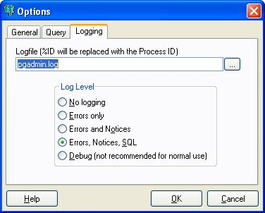

pgAdmin Options - Tab 3 (Logging)

- Logfile - This option specifies the file the pgAdmin will store any
logging data in. If %ID is found in the name it will be replaced with the
process ID, allowing multiple versions of pgAdmin to run with logging at once.
- No logging - No logging will be performed at all.
- Errors only - pgAdmin will log errors to the log file, but nothing
else.
- Errors and Notices - pgAdmin will log errors and notice messages from PostgreSQL
to the log file, but nothing else.
- Errors, Notices, SQL - Error messages, notice messages from PostgreSQL and SQL queries
will be logged to the log file.
- Debug - Error messages, notice messages from PostgreSQL, SQL queries and debug messages
will be logged to the log file. This option may significantly slow down pgAdmin and is therefore
not recommended for normal use.